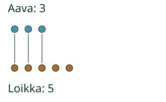
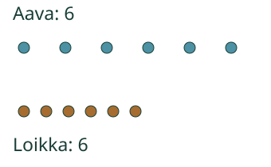
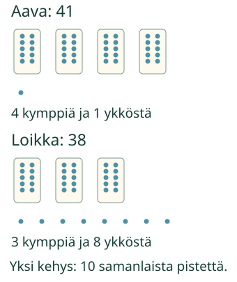

Aavalla ja Loikalla on merkkejä. Kummalla on enemmän vai onko yhtä monta?
Aavalla ja Loikalla on merkkejä. Kummalla on enemmän vai onko yhtä monta?
Vertaa määriä
Vertaan kahta lukua: suurempi, pienempi vai yhtä suuri. Yhdistä yksi merkki kummaltakin pariksi.

Loikalle jää merkkejä ilman paria. 5 on suurempi kuin 3. Aavalla on vähemmän.
Yhtä monta voi näyttää erilaiselta

Molemmilla on 6. Vaikka toinen rivi on leveämpi, merkkejä on yhtä monta. Kumpikaan määrä ei ole suurempi.
Ennusta: tuleeko samoja kuutta merkkiä enemmän, jos ne levitetään kauemmas toisistaan?
Katso ajatus
Ei. Yhtään merkkiä ei tullut lisää tai lähtenyt pois. Väli muuttui, määrä ei.
Ilman moduulia: piirrä 3 merkkiä ja 5 merkkiä. Yhdistä parit. Vertaa sitten kahta kuuden merkin ryhmää. Myös kaksi tyhjää ryhmää ovat yhtä suuret: 0 ja 0.
Tyhjä ja yksi
Tyhjässä rasiassa on 0 merkkiä. Yksi on enemmän kuin nolla. Kun määrät vaihtavat paikkaa, vastaus seuraa määriä.
Apua
Katso annetut määrät ja kuvat. Voit muodostaa parit, laskea tai verrata lukuja suoraan. Jokainen merkki lasketaan yhdeksi. Pelkkä rivin pituus tai merkin väri ei kerro määrää. Kaikkia merkkejä ei tarvitse napauttaa eikä nimiä sanoa ääneen.
Lisätutkimus: kympit ja ykköset
Yksi kehys sisältää kymmenen samanlaista pistettä. Se on yksi kymppi. Myös irrallinen piste on yksi.

41 on suurempi kuin 38. Neljä kymppiä on 40, jo enemmän kuin 38. Kahdeksan ykköstä ei tässä korvaa puuttuvaa kymppiä.
52 ja 57: molemmissa on viisi kymppiä. Silloin verrataan ykkösiä. 7 on enemmän kuin 2, joten 57 on suurempi. Mallin ja kymppikehysten merkityksen saa katsoa koko ajan.
Vertailun voi myös kirjoittaa merkillä: 5 > 3, 3 < 5 ja 6 = 6. Kärki osoittaa pienempään. Merkit ovat tässä apumerkintöjä; vertailun voi vastata sanoin.
Opettajalle: vertailun rajat
Vuosiluokat 1–2, concept/atomic, direct_curriculum. Vaadittu M-NUM-03 säilyy. M-NUM-07 on vahva tuki, ei pakollinen portti. Kymppi–ykkösmalli selitetään lisätutkimuksessa ja sitä käyttävissä tehtävissä; M-PLACE-02:ta tai merkkisolmuja ei lisätä esitiedoiksi. Ydinvertailut ovat pieniä näkyviä määriä, myös 0 ja yhtäsuuret määrät.
Kuvan kaikki annetut yksiköt näkyvät. Välin vaihtaminen ja pariviivat säilyttävät lukumäärän ja pätevän palautteen. Kymppikuvassa jokaisessa kehyksessä on oikeasti kymmenen samanlaista pistettä. Kokonaiset määrät ovat esillä myös silloin, kun huomio kohdistuu kymppeihin. Tasatilanteessa ei nimetä voittajaa. Kolmen kortin lisätehtävä hyväksyy samansuuruiset kortit kummassa tahansa keskinäisessä järjestyksessä.
Vastaus tarkistetaan nykyisestä tilanteesta ja näkyvistä valinnoista. Vastaus tai annettu määrä muuttaa palautteen neutraaliksi. Oikea valinta ei yksin osoita käytettyä strategiaa tai fyysistä parittamista. Pienten lukujen onnistumisesta ei päätellä itsenäistä kaksinumeroisten lukujen, kaikkien vertailumerkkien tai pysyvää hallintaa. Ei henkilöhistoriaa, formaalia peli-/prosessinäyttöä tai vaikuttavuusväitettä.
Ilman ruutua vertaa kahta annettua merkkiryhmää. Vaihda järjestystä ja välejä. Aikuinen voi lukea. Koristeellinen hahmo ei ole laskettava merkki.
Lite voi pyytää jo ohjatussa harjoituksessa kaksinumeroisten lukujen, esimerkiksi 16 ja 20, vertailua. Valmistele sitä ennen lisätutkimuksen kymppi–ykkösmalli tai rajaa harjoittelulupaus pieniin annettuihin lukuihin. Oppitunnin pieni ydinvertailu ei yksin osoita kaksinumeroisten lukujen itsenäistä hallintaa. Kanonisia esitietoja ei lisätä.
Lopuksi: mistä tiedät, että kahdessa ryhmässä on yhtä monta?